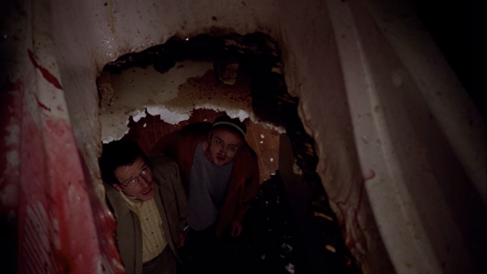

Konsekuensi Berdarah
Setelah sesi memasak pertama yang penuh kekacauan, Walt dan Jesse dihadapkan pada kenyataan brutal dari dunia kriminal: membereskan kekacauan mereka. Tugas mereka terbagi dua, Walt harus menangani salah satu pengedar yang masih hidup, Krazy-8, yang mereka sekap di basement, sementara Jesse ditugaskan untuk melarutkan mayat Emilio dengan asam fluorida. Namun, kecerobohan Jesse yang mengabaikan instruksi spesifik Walt untuk menggunakan wadah plastik, malah menggunakan bathtub keramik, berujung pada salah satu bencana paling mengerikan dan tak terlupakan.

Episode ini secara cerdas menurunkan tensi dari episode pilot dan menggantinya dengan humor gelap serta horor yang visceral. "Cat's in the Bag..." adalah pelajaran tentang sebab-akibat. Jika episode pertama adalah tentang keputusan, episode kedua adalah tentang konsekuensi. Episode ini memperkuat dinamika hubungan Walt dan Jesse; Walt sebagai otak yang frustrasi dan Jesse sebagai "tangan" yang ceroboh. Kontras antara pendekatan ilmiah Walt dan kecerobohan Jesse menjadi sumber komedi sekaligus ketegangan yang membuat penonton terpaku.
Adegan paling memorable tentu saja adalah ketika langit-langit kamar mandi runtuh. Momen di mana Walt dan Jesse menatap ngeri pada sisa-sisa tubuh Emilio yang hancur luluh bersama reruntuhan bathtub adalah gambaran sempurna dari "kejenakaan" horor khas Breaking Bad. Adegan ini tidak hanya mengejutkan secara visual, tetapi juga berfungsi sebagai metafora kuat: pilihan Walt untuk memasuki dunia ini telah secara harfiah merusak fondasi dari kehidupan normal, dan tidak ada jalan untuk kembali.